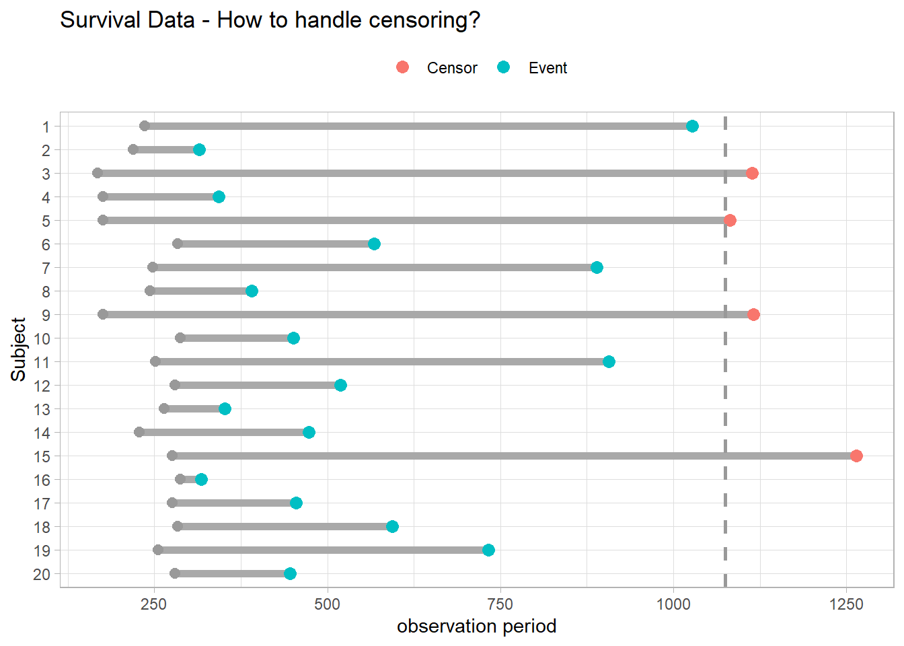

library(tidyverse)
library(scales)
library(survival)
library(survminer)1 Concepts
Survival analyses model time-to-event. They differ from linear regression in two respects. Event times are typically skewed right with many early events and few late ones, violating linear regression’s normality assumption. Survival analyses must also manage censoring, an unknown starting event (left censoring) and/or ending event (right censoring)1. Censoring occurs if the event does not take place by the end of the study window, or the subject is in some way lost to follow-up. In Figure 1.1, subjects 3, 5, 9, and 15 either did not have the event or dropped out of the study. Censored observations do not reveal their total time to event, but they do reveal at least their minimum.
Show the code
survival::lung[81:100,] %>%
mutate(
subject = factor(row_number()),
status = factor(status, levels = c(1, 2), labels = c("Censor", "Event")),
start_time = age * 4,
time = case_when(
subject == 3 ~ time + 750,
subject == 5 ~ time + 100,
subject == 9 ~ time + 200,
subject == 15 ~ time + 400,
TRUE ~ time
)
) %>%
ggplot(aes(y = fct_rev(subject))) +
geom_segment(aes(yend = fct_rev(subject), x = start_time, xend = start_time + time), size = 2, color = "darkgray") +
geom_point(aes(x = start_time), color = "gray60", size = 2.5) +
geom_point(aes(x = start_time + time, color = status), size = 3) +
geom_vline(aes(xintercept = 1075), color = "gray60", linetype = 2, size = 1) +
theme_light() +
theme(legend.position = "top") +
labs(title = "Survival Data - How to handle censoring?", x = "observation period",
y = "Subject", color = NULL)

Some analyses treat time-to-event as a continuous outcome with survival times following a parametric distribution such as the Weibull (Chapter 3). A more common approach is the semi-parametric model, with an unspecified time-to-event distribution estimated by non-parameteric methods coupled with covariate effects following a parametric distribution. The Cox proportional hazards model is a semi-parametric model (Chapter 4). A third approach treats time-to-event as a series of person-periods with binary outcomes that follow a logit or cumulative log-log distribution. These models are called discrete-time models (Chapter 5). A fourth approach employs machine learning models such as trees and SVMs to optimize predictive power at some expense of interpretability (Chapter 6).
Any of these approaches can produce accurate and efficient results (Suresh 2022), but the typical survival analysis uses Kaplan-Meier plots to visualize survival curves (Chapter 2), log-rank tests to compare survival curves among groups, and Cox proportional hazards regression to describe the effect of explanatory variables on survival. In R, use the survival package to model, survminer to visualize, and gtsummary for summarize.
1.1 Terminology
Let \(T^*\) be a random variable representing the time until the event, and \(U\) be a random variable representing the time until (right) censoring. The observed value is whichever event comes first, \(T = \mathrm{min}(T^*, U)\). The time, \(T\), and status, \(\delta = I[T^* < U]\) (1 = censored, 2 = event), constitutes the response in a survival analysis. The survival::lung dataset is typical, where time = \(T\) and status = \(\delta\), and the other variables are identifying features for the subject.
head(survival::lung) inst time status age sex ph.ecog ph.karno pat.karno meal.cal wt.loss
1 3 306 2 74 1 1 90 100 1175 NA
2 3 455 2 68 1 0 90 90 1225 15
3 3 1010 1 56 1 0 90 90 NA 15
4 5 210 2 57 1 1 90 60 1150 11
5 1 883 2 60 1 0 100 90 NA 0
6 12 1022 1 74 1 1 50 80 513 0Censoring sometimes occurs when subjects are monitored for a fixed period of time (Type I), the study is halted after a pre-specified level of events are reached (Type II), or the subject drops out for a reason other than the event of interest (random censoring).
You can specify the survival distribution either with a survival function, \(S(t)\), or with a hazard function, \(h(t)\)2. Let \(F(t) = P(T \le t)\) be the cumulative risk function (aka, cumulative incidence), the probability of the event occurring on or before time \(t\). \(S(t)\) is its complement, \(S(t) = 1 - F(t)\).
\[S(t) = P(T > t).\]
The hazard function is the instantaneous event rate at \(t\) given survival up to \(t\),
\[h(t) = \lim_{\delta \rightarrow 0}{\frac{P(t < T < t + \delta|T > t)}{\delta}}.\]
An instantaneous event rate has no intuitive appeal, but think of it in discrete time where \(\delta > 0\). \(h(t + \delta)\) is the conditional probability of an event at the discrete interval \(t + \delta\), conditioned on those at risk during that interval.
The survival and hazard functions are related by the multiplication rule, \(P(AB) = P(A|B)P(B)\). The event probability at \(t\), \(f(t) = F'(t)\), is the probability of the event at \(t\) given survival up to \(t\) (the hazard function) multiplied by the probability of survival up to \(t\) (the survival function).
\[f(t) = h(t) S(t).\]
Again in discrete terms, survival up to interval \(t\) is the sum product of the survival probabilities at each preceding period, \(S(t) = \Pi_{i = 1}^t [1 - h(t)]\). It is the complement of the cumulative risk.
Rearranging, \(h(t)dt = \frac{f(t)}{S(t)}dt\) describes the prognosis for a subject who has survived through time \(t\).
\(S(t)\) is also the negative exponent of the cumulative hazard function,
\[S(t) = e^{-H(t)}.\]
Taking the log and rearranging, \(h(t) = \frac{d}{dt} [\log S(t)]\), the negative time derivative of the log cumulative hazard.
Use the survival function to estimate the mean survival time, \(E(T) = \int S(t)dt\), and median survival time, \(S(t) = 0.5\).
Take the exponential distribution as a quick example. It has a constant hazard, \(h(t) = \lambda\). The cumulative hazard is \(H(t) = \int_0^t \lambda du = \lambda t\). The survival function is \(S(t) = e^{-\lambda t}\). The probability of failure at time \(t\) is \(f(t) = \lambda e^{-\lambda t}\). The expected time to failure is \(E(t) = \int_0^\infty e^{-\lambda t} dt = 1 / \lambda\), and the median time to failure is \(S(t) = e^{-\lambda t} = .5\), or \(t_{med} = \log(2) / \lambda\).
There are parametric and non-parametric methods to estimate a survival curve. The usual non-parametric method is the Kaplan-Meier estimator. The usual parametric method is the Weibull distribution. In between is the most common way to estimate a survivor curve, the Cox proportional hazards model.
1.2 Log-Rank Test
It is not obvious how to compare two survival distributions because they can cross, diverge, etc. When observations do not follow a parametric distribution function, compare them with the non-parametric log-rank test. The alternative hypothesis, termed the Lehmann alternative, is that one survival distribution is uniformly higher than the other, \(H_A : S_1(t) = [S_0(t)]^\psi\), or equivalently, the hazard functions are proportional, \(h_1(t) = \psi h_0(t)\), with \(H_A: \psi \ne 1\).
At each \(t\), you could construct a 2x2 contingency table between event/no-event and curves A and B.
| Curve A | Curve B | Total | |
|---|---|---|---|
| Event | \(d_{Ai}\) | \(d_{Bi}\) | \(d_i\) |
| No Event | \(n_{Ai} - d_{0i}\) | \(n_{Bi} - d_{1i}\) | \(n_i - d_i\) |
| Total | \(n_{Ai}\) | \(n_{Bi}\) | \(n_i\) |
Holding the margins as fixed, the probability of observing \(d_{Ai}\) events in curve A at time \(i\) follows a hypergeometric distribution.
\[f(d_{Ai} | n_{Ai}, n_{Bi}, d_i) = \frac{{{n_{Ai}}\choose{d_{Ai}}}{{n_{Bi}}\choose{d_{Bi}}}}{{n_i}\choose{d_i}}\]
The expected value is \(e_{Ai} = E(d_{Ai}) = \frac{d_i}{n_i} \cdot n_{0i}\) with variance \(v_{Ai} = Var(d_{Ai}) = d_{i} \cdot \frac{n_{Ai}}{n_i} \cdot \frac{n_{1i}}{n_i} \cdot \frac{n_i - d_i}{n_i - 1}\).
The log-rank test statistic is the sum of the differences between the observed and expected events, \(U_0 = \sum (d_{Ai} - e_{Ai})\), normalized by dividing by the square-root of its variance, \(V_0 = Var({U_0}) = \sum v_{Ai}\).
\[U = \frac{U_0}{\sqrt{V_0}} \sim N(0, 1)\]
\(U^2\) is a chi-square random variable with one degree of freedom.
\[U^2 = \frac{U_0^2}{V_0} \sim \chi_1^2\]
lung_1 <- survival::lung %>%
mutate(sex = factor(sex, levels = c(1, 2), labels = c("Male", "Female")))
(km_diff <- survdiff(Surv(time, status) ~ sex, data = lung_1))Call:
survdiff(formula = Surv(time, status) ~ sex, data = lung_1)
N Observed Expected (O-E)^2/E (O-E)^2/V
sex=Male 138 112 91.6 4.55 10.3
sex=Female 90 53 73.4 5.68 10.3
Chisq= 10.3 on 1 degrees of freedom, p= 0.001 The p-value for \(\chi_1^2\) = 10.3 is 1 - pchisq(km_diff$chisq, length(km_diff$n) - 1) = 0.001, so reject \(H_0\) that males and females have identical survival patterns.
While the log-rank test can determine whether survival differs between groups, it does not estimate the effect size. It is a statistical, but not a clinical, assessment of the factor’s impact (Bradburn 2003).